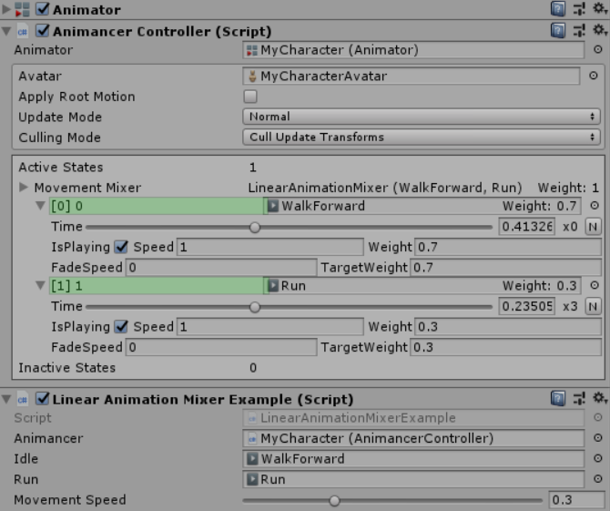

Pro Only: Animancer Lite allows you to try out this feature in the Unity Editor, but it will not be available in a runtime build unless you purchase Animancer Pro.
AnimationMixers serve the same purpose as Mecanim Blend Trees; they allow you to interpolate between multiple animations based on a parameter. For example, you might blend between idle, walk, and run based on how fast you want to move so that you can have your character animate appropriately for any speed based on how far the user tilts a joystick instead of only having a few specific speeds you can move at.
Similarly to Animancer in general, mixers are a more code-based approach than Blend Trees:
- Mixers are created dynamically at runtime. This means they are more flexible in how they can be used.
- Blend Trees are created manually in the Unity Editor. They have a user-friendly interface for setting up their structure and previewing the animations, however their structure cannot be changed at runtime. You can play and control Blend Trees in Animancer using Parameter Controller States.
- By being defined in the Unity Editor, Blend Trees are able to analyse their animations so that their walk cycles can be synchronised (right foot touch down and lift up at the same time, etc.), which is especially important for animations of different lengths. Unfortunately that analysis is not possible at runtime (and would be quite expensive to performance even if it was) so Animancer is unable to do the same thing in
AnimationMixers. - Mixers also generally have an advantage in the way they interpolate root motion.
Choosing a Mixer
The system includes several different mixer types:
| Mixer Type | Parameter / Thresholds | Interpolation Algorithm | Equivalent Mecanim Blend Tree |
|---|---|---|---|
LinearAnimationMixer |
float |
Linear | 1D |
CartesianAnimationMixer |
Vector2 |
Gradient Band | 2D Freeform Cartesian |
DirectionalAnimationMixer |
Vector2 |
Polar Gradient Band | 2D Freeform Directional |
Each state in a mixer has a threshold value which determines the parameter value at which that state will become active and how it blends in relation to the other states when the parameter is between thresholds. You can either specify the thresholds manually or calculate them using AnimationMixer<T>.CalculateThresholds. The AnimancerExtensions class also provides CalculateThresholdsFromAverageVelocityXZ as an extension method for Vector2 based mixers (Cartesian and Directional) to calculate the thresholds based on the average root motion velocity of each state on the X and Z axes. Note that this method needs the “Bake Into Pose” toggle to be disabled for “Root Transform Position (XZ)” on the import settings of each AnimationClip in the mixer.
When selecting a 2D mixer, Directional generally offers better interpolation than Cartesian for animations that represent direction such as move forward/back/left/right. Also note that in areas with 180 degrees or more between states the interpolation is ill-defined and will likely have undesirable results; I.E. if you have clips for forward, back, and left, but no right, then you will get odd results if you set the parameter to the right.
AnimationMixers are a type of AnimancerState with several other differences from regular ClipStates:
- The
Clipproperty of a mixer will always return null. - States inside an
AnimationMixerare not registered in the internal Dictionary. If you need to access these states directly you must do so via their index in the mixer itself. All inbuilt mixers expose theirStatesas an array. - Since mixers don’t have a duration or time of their own, they don’t actually have
OnEndevents but will instead register any delegates they are given to all of their child states.
Using a Mixer
- Select a mixer type from the table above and make a
newone using any of its constructors. For example,new LinearAnimationMixer. - Call one of the
Initialisemethods on the mixer:
Initialise(portCount)allocates room for the specified number of states which can be filled individually usingCreateStateor by passing the mixer into the constructor orSetParentmethod of any state type. This even lets you nest mixers inside each other.Initialise(clips, thresholds)allocates aClipStatefor each of theclipsand assigns their correspondingthresholds.
- Make sure all states have been assigned thresholds to determine the parameter values where they will be used and how they will blend in relation to other states. This can be done using optional parameters in the
InitialiseandCreateStatemethods, or by callingSetThresholdorSetThresholds. - Store a reference to the mixer so you can set its
Parameterlater on to control its blending.
The following example script uses a LinearAnimationMixer to blend between idle and run animations based on a movementSpeed slider in the inspector:
using UnityEngine;
namespace Animancer
{
// Simple example of an Animation Mixer (similar to Mecanim Blend Trees).
[RequireComponent(typeof(AnimancerController))]
public sealed class LinearAnimationMixerExample : MonoBehaviour
{
/**********************************************************************/
public AnimancerController animancer;
public AnimationClip idle;
public AnimationClip run;
[Range(0, 1)]
public float movementSpeed;
// Keep the mixer after is is created so we can easily set the Parameter
// when we need to change it.
private LinearAnimationMixer _MovementMixer;
/**********************************************************************/
private void Awake()
{
// Make a new mixer and connect it to the default layer.
_MovementMixer = new LinearAnimationMixer(animancer);
// Optionally call AddState to register the mixer with a key so it
// can be accessed from other scripts using that key.
animancer.AddState("Movement Mixer", _MovementMixer);
// We could specify custom thresholds in the Initialise call, but
// since we aren't it will use 0 and 1 respectively. Other overloads
// of this method take 3 clips, or an array of any number of clips.
_MovementMixer.Initialise(idle, run);
// Play the mixer just like a regular clip.
animancer.Play(_MovementMixer);
}
/**********************************************************************/
private void Update()
{
// Assign the movement speed to the mixer's parameter to control its
// current blending.
_MovementMixer.Parameter = movementSpeed;
}
/**********************************************************************/
}
}
The screenshot below shows the inspector for the example script. Unlike a regular ClipState that plays a single animation, the LinearAnimationMixer shows its child states in the form [PortIndex] Threshold with the ability to expand the details of both the mixer and child states.
